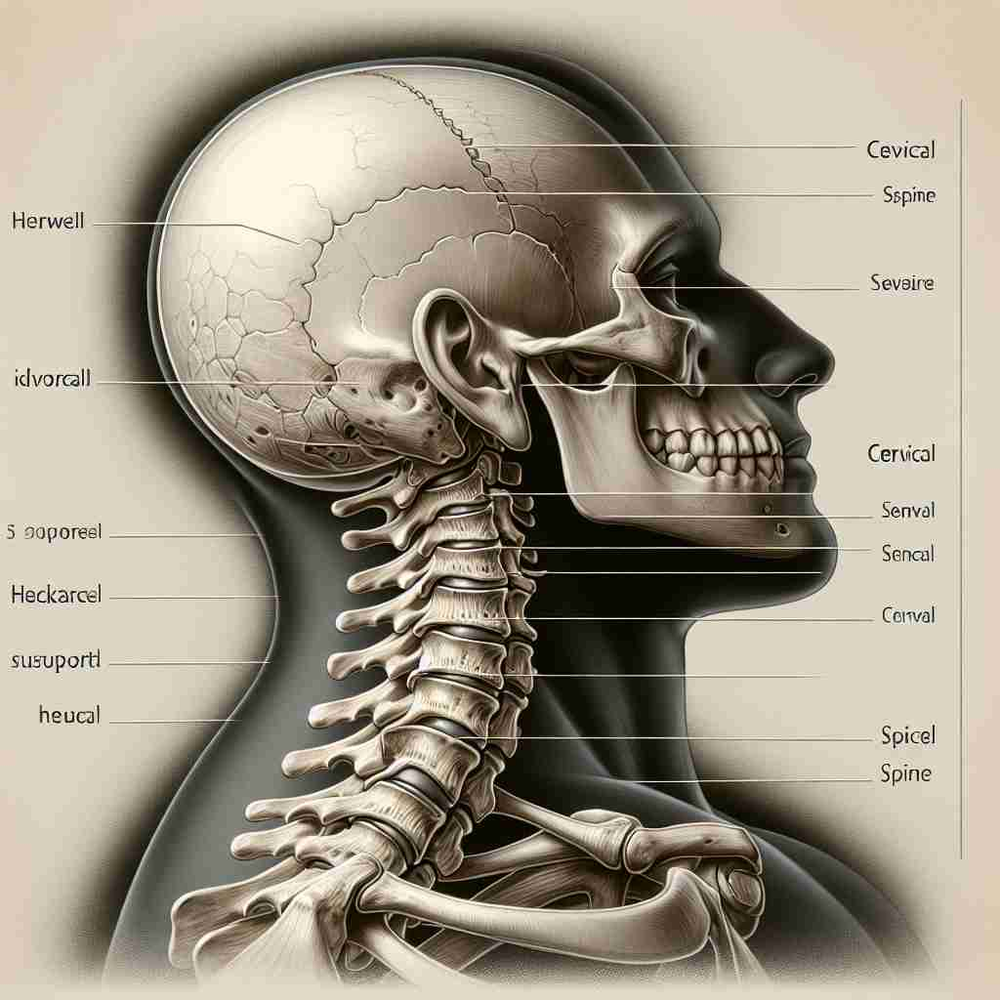

💬 The doctor examined the patient's cervical spine for any issues. 医生检查了患者的颈椎是否有问题。

💬 The cervical spine supports the head and protects the spinal cord. 颈椎支撑着头部并保护脊髓。
💬 The doctor is discussing cervical health with his patient. 医生正在与患者讨论颈椎健康。

💬 The cervical spine structure is important for neck movement. 颈椎结构对颈部运动至关重要。
🧠 记住'cervical'的关键在于联想'颈部'这一核心概念。无论是人体的颈部、子宫颈，还是其他器官的颈状部分，都与这个词有关。想象一个细长的颈部形状，可以帮助你联想这个词在不同语境中的应用。
🔈 ['sɜːvɪk(ə)l][sɜː'vaɪk(ə)l]
🗝️ adj. relating to the neck or the cervix (the narrow part of the uterus) 与颈部或子宫颈（子宫的狭窄部分）有关的
🎭 在一个医生办公室，医生正在一张人体解剖图前向患者解释。医生指着脖子和子宫的解剖结构，说：'这些都是 cervical 部位，我们需要重点检查。'这让患者了解了 cervical 可以指代颈部或子宫颈的意思。
💬 The patient complained of cervical pain after the accident. 患者在事故后抱怨颈部疼痛。
🌳 由词根 "cervic-"（颈部）和形容词后缀 "-al" 组成，表示与颈部相关的。
🕸️ 1.cervix: 子宫颈 2.cervicitis: 宫颈炎 3.cervicoaxillary: 颈腋的
💡 记忆 "cervical" 时，可以将 "cervic" 联想到 "service"，如服务员的颈部位置总是很直，帮助记住它与颈部相关。后缀 "-al" 表示形容词，说明是形容词形式。